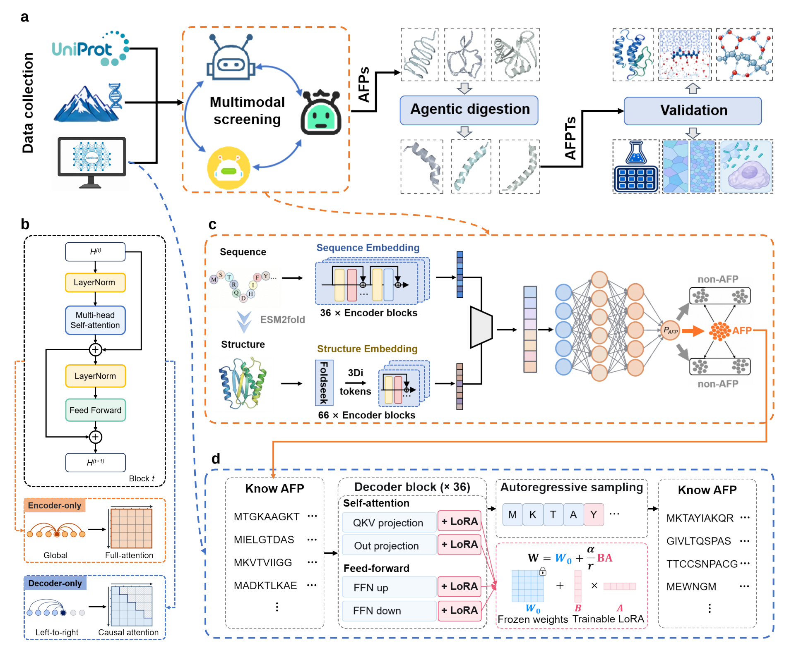
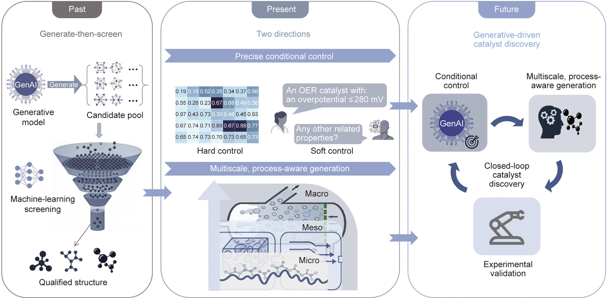
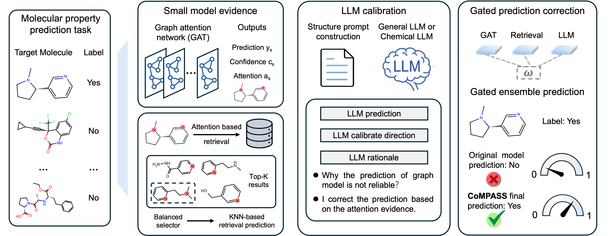
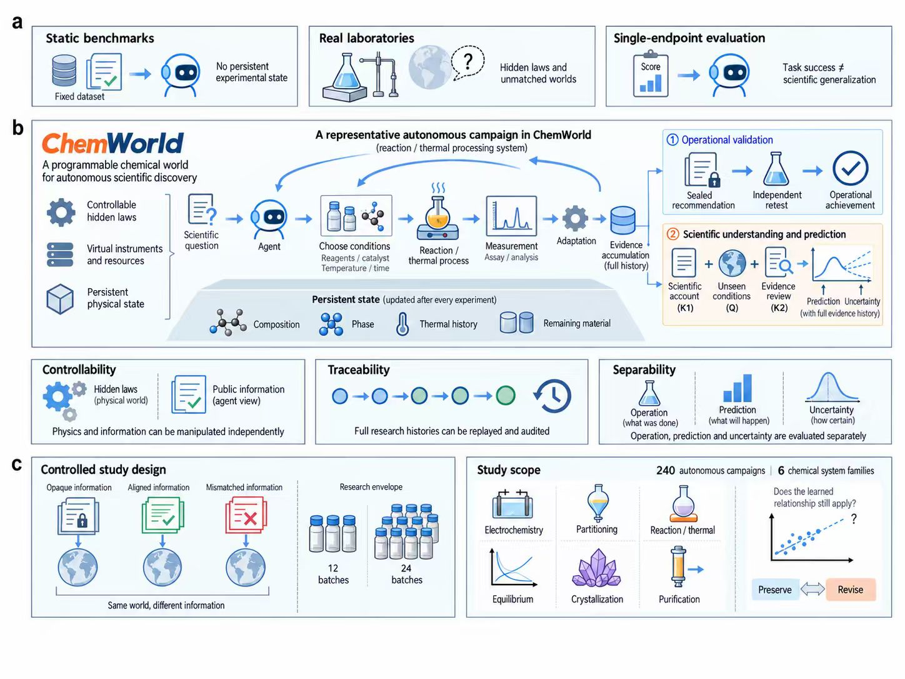
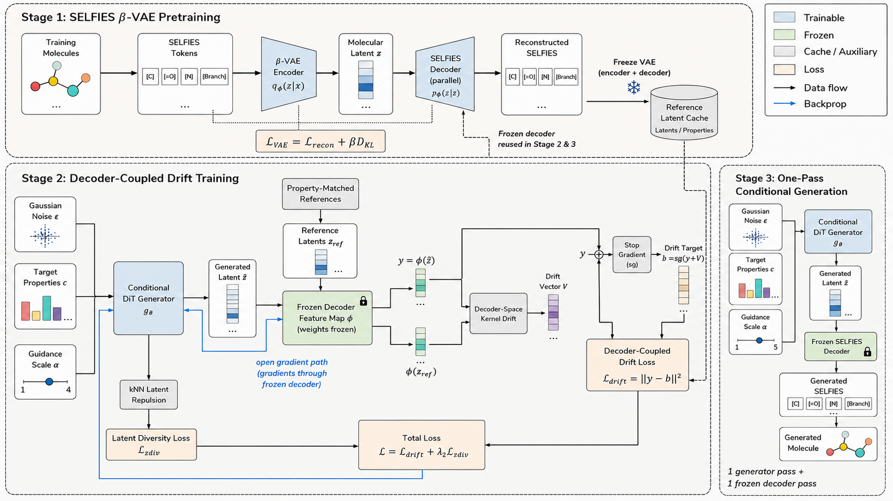
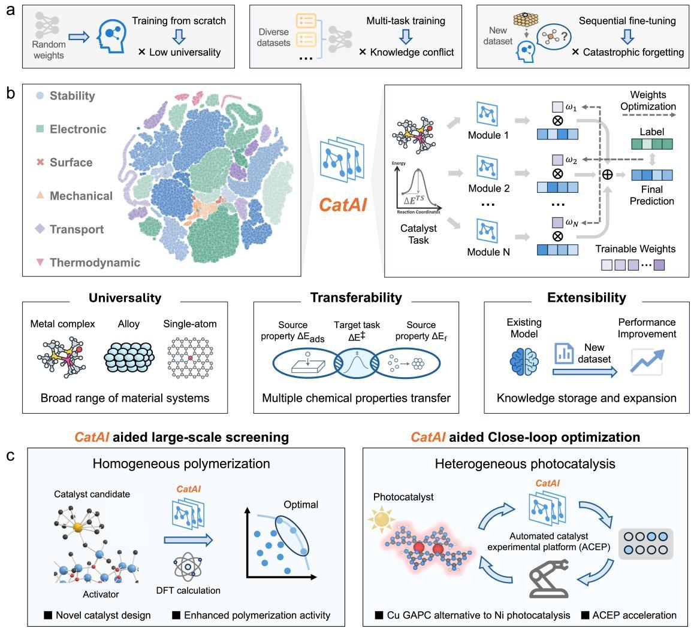
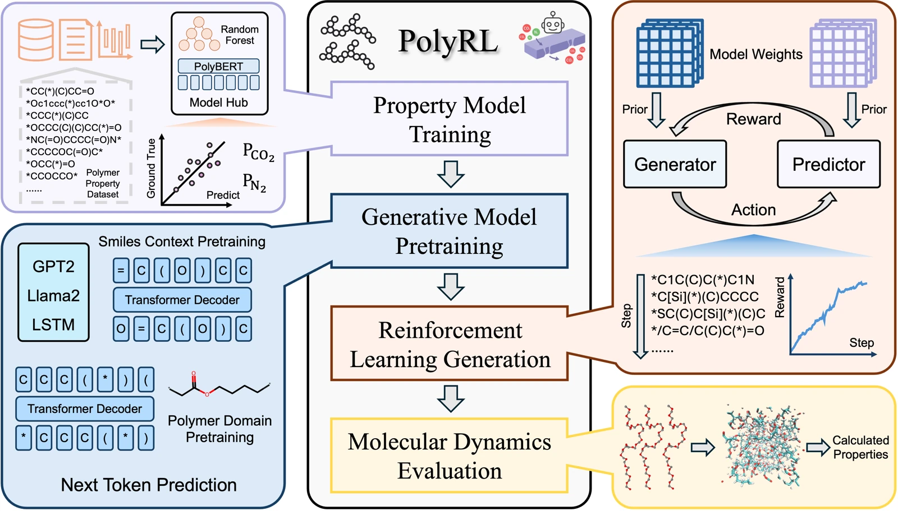

👤 Biography
I am a Ph.D. student in the Department of Chemical Engineering at Tsinghua University, advised by Prof. Xiaonan Wang, while pursuing a minor degree in Artificial Intelligence at the College of AI. I studied chemical biology and chemical engineering at Tanwei College as an undergraduate.
My research focuses on AI for Science. I work on generative modeling, reinforcement learning, multimodal learning, and scientific AI agents, with applications in biomolecular and materials design.
🌌 Research Vision
Beyond understanding nature, towards discovering and designing what does not yet exist.
- I believe artificial intelligence has the potential to fundamentally transform how scientific knowledge is acquired, how hypotheses are formulated, and how new possibilities are explored.
- My long-term vision is to develop scientific intelligence that extends beyond learning from existing knowledge — reasoning about the natural world, exploring uncharted design spaces, and uncovering new scientific principles through the interplay of computation and experimentation.
- Ultimately, I aspire to contribute to a new paradigm of scientific discovery, where artificial intelligence is not merely a tool for understanding nature, but an integral part of discovering and shaping its possibilities.
🔬 Research Interests
- Generative Modeling & Reinforcement Learning
- Multimodal Learning
- Agentic Scientific Discovery
☎️ Contact Info
- Affiliation · Tsinghua University
- Email · liyijun22@
mails.tsinghua.edu.cn - WeChat · knituaLYJ04
🎓 Education & Experience
-
 Tsinghua UniversityAug. 2026–PresentPh.D. Student, Department of Chemical EngineeringAdvisor · Prof. Xiaonan WangAI for Science · Scientific Intelligence
Tsinghua UniversityAug. 2026–PresentPh.D. Student, Department of Chemical EngineeringAdvisor · Prof. Xiaonan WangAI for Science · Scientific Intelligence -
National University of Singapore (NUS)Aug.–Sep. 2025Summer Visiting Research StudentAdvisor · Prof. Zhe WuMachine Learning · Nonlinear Systems & Process Optimization
-
Stanford UniversityJan. 2025–Mar. 2026Remote Research CollaborationResearch advisor · Prof. Adam BrandtScientific AI Agents · Multi-agent Systems · Scientific Knowledge Extraction
-
Tsinghua UniversityAug. 2022–Jun. 2026Undergraduate, Tanwei CollegeChemical Biology & Chemical EngineeringGPA: 3.9/4.0 · Rank: 2/61 (Top 3.3%)Outstanding Graduate of Tsinghua University
🔥 News
[11.2026] 🎉 Our work on AI-guided antifreeze peptide discovery is now available on bioRxiv.
[08.2026] 🎓 I started my Ph.D. at Tsinghua University, advised by Prof. Xiaonan Wang.
[06.2026] 🎓 I graduated from Tsinghua University with a GPA of 3.9/4.0 (Rank 2/61) and was named an Outstanding Graduate of Tsinghua University.
[06.2026] 🎉 AFPFusionLM was featured in the oral program at AI4X-AC 2026.
[03.2026] 📰 Our work on AI-driven scientific knowledge extraction was featured on the cover of Nexus.
[01.2026] 🎉 PolyRL was published in Digital Discovery.
[11.2025] 🏆 I received the Wang Dazhong Scholarship (40/3,000) and the Scholarship for Excellence in Scientific and Technological Innovation (Top 10%).
Show More NewsShow Less News
[10.2025] 🏆 I was honored as an Outstanding Student Leader at Tsinghua University.
[08.2025] ✈️ I joined Prof. Zhe Wu’s group at the National University of Singapore for a summer research visit through September.
[07.2025] 🎉 Our study of the life-cycle environmental impacts of plasticizers was published in Green Chemistry.
[10.2024] 🏆 I received the First-Class Comprehensive Excellence Scholarship and the Scholarship for Academic Excellence (both Top 10%).
[08.2024] 🏆 Our team won National Second Place (Top 1%) in the Shenzhen Cup Mathematical Modeling Challenge (Track D).
[06.2024] 🏆 Our team won First Prize (Top 1%) in the Hua Luogeng Cup Mathematical Modeling Competition.
[10.2023] 🏆 I received the Scholarship for Excellence in Sports at Tsinghua University.
[08.2022] 🎓 I began my undergraduate studies at Tanwei College, Tsinghua University.
📝 Publications
📒 Selected publications/preprints


Large-scale AI-guided discovery of antifreeze peptides reveals functional tandem-repeat architectures
- Yijun Li, Chi Wang, Jialin Liu, et al.
- bioRxiv · Preprint, .
- [Preprint] [Project repository]


Toward Precise, Multiscale, and Process-Aware Catalysis Generation via Generative AI
- Wentao Li*, Leyi Zhao*, Jiangjie Qiu, Zemeng Wang, Yijun Li, Manu Suvarna, Qilong Cai, Jinxing Chen, Jiong Lu, Xiaonan Wang
- Engineering · Correspondence, · Vol. 64, pp. 70–75.
- [Paper] [Figure 1] Figure license · CC BY 4.0


CoMPASS: Collaborative Molecular Property Prediction via Adaptive Small-Large Model Synergy
- Wentao Li, Jiangjie Qiu, Yijun Li, Leyi Zhao, Xiaonan Wang
- arXiv:2608.30674 · Preprint, .
- [Paper] [Figure 1] Figure license · CC BY-NC-SA 4.0


ChemWorld: Programmable Chemical Worlds for Controlled and Replayable Agent Experimentation
- Jiangjie Qiu*, Yijun Li*, Xiaonan Wang
* Joint first authors. - arXiv preprint, .
- [arXiv:2608.10792] [Framework figure]

AFPFusionLM: A Hybrid Sequence–Structure Protein Language Model for Antifreeze Protein Function Prediction
- Yijun Li*, Chi Wang*, Xiaonan Wang
- AI4X-AC · Oral presentation, .
- [Paper]


DriftingMol: Decoder-Coupled Drift for One-Pass Property-Conditional Molecular Generation
- Jiangjie Qiu*, Yijun Li*, Wentao Li, Xiaonan Wang
* Joint first authors. - arXiv preprint, .
- [arXiv:2605.24841] [Framework figure]


Adaptive and scalable catalyst discovery with composable intelligence
- Wentao Li*, Qilong Cai*, Qi Lei*, Jinxing Chen, Ruixuan Chen, Jiangjie Qiu, Botian Wang, Kai Zhao, Zemeng Wang, Yijun Li, Jun Yin, Fangfang Li, Hongxuan Liu, Yingdong Lu, Yawen Ouyang, Manu Suvarna, Wei-Ying Ma, Ya-Qin Zhang, Kostya S. Novoselov, Hao Zhou, Jiong Lu, Xiaonan Wang
- Under review at Nature Synthesis. Preprint posted .
- [Preprint] [Code] [Figure 1] Figure license · CC BY 4.0

Artificial intelligence-driven framework for science-policy interface on global plastic life cycle environmental impacts
- Kai Zhao*, Yijun Li*, Xiting Peng*, et al.
- Nexus · Cover article, .
- [Paper] [Framework figure]


PolyRL: Reinforcement Learning-Guided Polymer Generation for Multi-Objective Polymer Discovery
- Wentao Li*, Yijun Li*, Qi Lei*, Zemeng Wang, Xiaonan Wang
- Digital Discovery, .
- [Paper] [Framework figure]

Life-cycle environmental impacts of typical plasticizers for plastics and their sustainable transformation potential
- Yijun Li*, Kai Zhao*, Chi Wang, Hang Fu, Shanying Hu
- Green Chemistry, .
- [Paper] [Framework figure]
* Equal contribution
📚 Other publications
- A Life-Cycle Based Integrated Framework for Assessing the Sustainability of Plastic Additives. · ACS Sustainable Chemistry & Engineering.
- Identifying the flows and stocks of additives in polyvinyl chloride plastics for balancing environmental and economic impacts. · Resources, Conservation and Recycling.
- Life-Cycle Environmental Impacts of Additive-Related Chemicals in Polyvinyl Chloride Plastics and the Mitigation Potential. · Environmental Science & Technology.
🏆 Honors & Awards
- Outstanding Graduate of Tsinghua University
- Wang Dazhong Scholarship, Tsinghua UniversityTop 1.3% · 40/3,000
- Scholarship for Excellence in Scientific and Technological Innovation, Tsinghua UniversityTop 10%
- Outstanding Student Leader, Tsinghua University
- First-Class Comprehensive Excellence Scholarship, Tsinghua UniversityTop 10%
- Scholarship for Academic Excellence, Tsinghua UniversityTop 10%
- National Second Place, Shenzhen Cup Mathematical Modeling Challenge (Track D)Top 1% · Team Leader
- First Prize, Hua Luogeng Cup Mathematical Modeling Competition, Tsinghua UniversityTop 1% · Team Leader
- Scholarship for Excellence in Sports, Tsinghua University
- Provincial Second Prize, National Olympiad in Informatics
💼 Academic Services
At Tsinghua University, I volunteered at a joint student Q&A forum spanning six departments.
Curiosity in science, passion in life.
🌿 Beyond Research
Beyond my academic pursuits, I value leadership, exploration, physical well-being, and meaningful contributions to the community. My undergraduate years at Tsinghua were shaped not only by research, but also by diverse experiences beyond the classroom.
👥 Leadership & Service
I served as the president of a student association at Tanwei College and actively participated in university-level student organizations. In recognition of my contributions to student leadership and community development, I was named an Outstanding Student Leader of Tsinghua University (2025).
🌏 Social Engagement
I participated in five social practice and field research programs, leading one of them. These experiences took me to different regions across China, where I explored industrial development, pharmaceutical innovation, sustainability, and rural revitalization.
🏀 Sports & Athletics
I am passionate about basketball, football, and fitness. During my undergraduate years, I represented Tanwei College in university-level sports competitions and served as a team captain in both basketball and football competitions.
Our teams achieved several milestones, including reaching the university-level quarterfinals and securing third place in a collegiate basketball tournament. I also received the Scholarship for Excellence in Sports at Tsinghua University.
🤝 Volunteering
I have dedicated over 280 hours to volunteer service, participating in a wide range of community initiatives, educational activities, and campus service programs.
I was recognized as a Four-Star Zijing Volunteer at Tsinghua University.